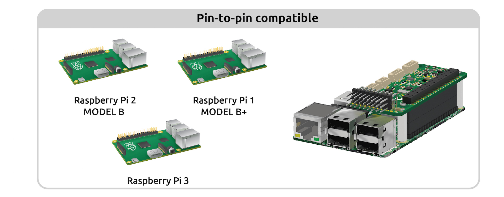
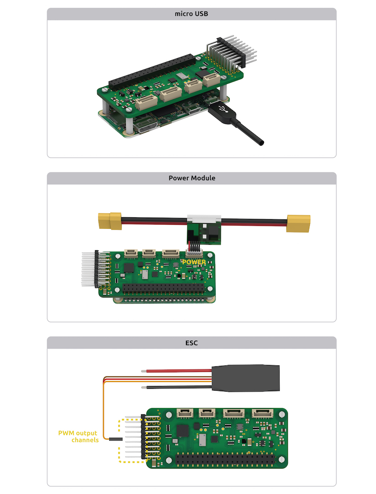

Archived Topic: PXFmini Wiring Quick Start¶
Note
PXFmini uses JST-GH connectors instead of DF13. This is the latest adoption made by the DroneCode Foundation
{kind=link}
This article provides high level information about how to power PXFmini and connect its most important peripherals.
PXFmini Wiring Chart¶
{kind=link}
[site wiki=”copter”] Copter users should also see the official setup documentation. [/site]
Power PXFmini¶
PXFmini is typically powered via its “power” port, as shown in the picture below. The power port simultaneously powers PXFmini and reads voltage and current analog measurements.
It can be also powered using a BEC, you just need to connect to the PWM rail.
Additionally, for developing/configuration purposes, it can be powered using a micro USB charger (2A recommended).
{kind=link}
Warning
Always use a power module to feed PXFmini while flying your drone
HDMI Connector¶
- If you wish to work straight under your Linux based autopilot, you can use the HDMI connector
and make your own configurations:
{kind=link}
Connect remote control inputs¶
PXFmini is compatible with PPM remote control (RC) receivers. For traditional single-wire-per-channel (PWM) receivers a PPM encoder can be used to convert the receiver outputs to PPM-SUM.
For more information see Compatible RC Transmitter and Receiver Systems (Erle-Brain 2). The PXFmini is compatible with the tecnology used in Erle-Brain 2.

FRSky Taranis Transmitter¶
GPS+Compass¶
The uBlox GPS + Compass Module is the recommended GPS for PXFmini. The GPS port is connected with the six-position DF13 cable, and the Compass port is connected to the I2C port with the four-position JST-GH cable, as shown in the next image:
{kind=link}
Connect Motors¶
Use the PWM rail in order to connect them:
{kind=link}
Note
Be aware of how you connect ESCs wires to PWM rail. The signal wire (white or orange color) should be connected at the top, the ground wire (black or brown color) at the bottom.
[site wiki=”copter”]
For Copter see Connect ESCs and Motors.
In overview, for copters connect each signal wire from the PDB to the main output signal (S) pins by motor number:
Pin 1 = Motor 1 - - Pin 5 = Motor 5
Pin 2 = Motor 2 - - Pin 6 = Motor 6
Pin 3 = Motor 3 - - Pin 7 = Motor 7
Pin 4 = Motor 4 - - Pin 8 = Motor 8
[/site]
[site wiki=”plane”]
For planes connect the control channel wires to the main output signal pins:
Pin 1 = Aileron
Pin 2 = Elevator
Pin 3 = Throttle
Pin 4 = Rudder
[/site]
[site wiki=”rover”]
For Rovers connect the throttle and steering wires to the main output signal pins:
Pin 3 = Throttle
Pin 1 = Steering
[/site]
USB ports¶
You could attach different dongle/devices to the USB ports that includes Raspberry Pi 2/3/Zero:
WiFi dongle¶
Use a (regular or high gain) WiFi dongle to create a hotspot that can, for example, be used for sending telemetry data and commands to a Ground Station. If you use the images provided by Erle Robotics, they automatically generate a WiFi hotspot.
{kind=link}
Note
Edimax AC (regular and high gain) are the officially supported dongles. These can be purchased from Erle-Brain with your autopilot/vehicle.
Bluetooth dongle¶
Use a Bluetooth dongle to connect additional devices, such as joysticks.
Note
You will need to configure BlueTooth interface to make it work
Connect other peripherals¶
Depending on your hardware there may be any number of other peripherals attached, including sensors, cameras, grippers etc. These can be found as sub-pages of the topic Optional Hardware.
More information in official documentation.